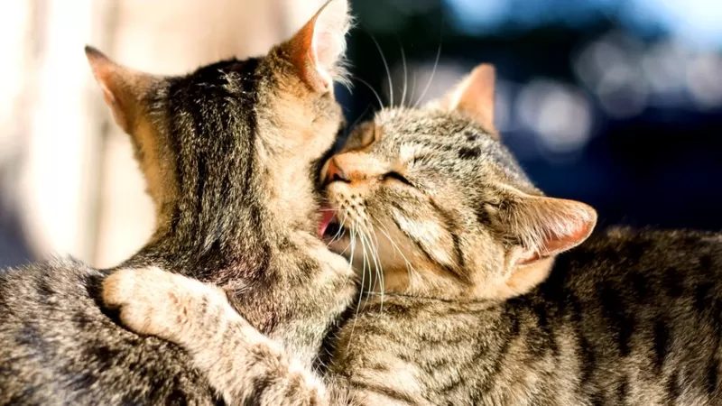

Собачники любят противопоставлять своих любимых питомцев кошкам. По сравнению с собаками они, мол, прожженные эгоисты, от человека им надо только пожрать.
Да, кошкам наплевать на вашу клумбу, и цветы в горшке на подоконнике они могут рассматривать только как объект молодецких забав - раскопать, погрызть, раскидать.
Но как тогда трактовать привычку домашних кошек приносить своим хозяевам подарки (обезглавленных мышек, зайчиков, птичек, бурундучков и проч.)? В общем, с кошками всё не так однозначно.
В отношении кошек по крайней мере одну вещь мы знаем наверняка: люди к кошкам питают особую симпатию. А вот как кошки относятся к людям, ясно не вполне.
По сравнению со столь преданными нам собаками кошки кажутся довольно равнодушными, как будто людские дела их вовсе не заботят. Но, как вы уже догадались, это неправда. Кошки просто умеют скрывать свои чувства.

Продолжаем разоблачение кажущейся эгоцентричности котиков. Внешне - особенно по сравнению с собаками, которые радуются как сумасшедшие любому знаку внимания со стороны хозяина - кошки весьма высокомерны. Такое впечатление, что им претит само представление о том, что у них вообще может быть хозяин. Нет, конечно, хозяева - они.
Поэтому нам часто кажется, что с кошками гораздо трудней подружиться, чем с собаками. Но, может быть, мы их просто не понимаем?
Вот еще одна интересная статья про кошек-одиночек, которые предпочитают ходить сами по себе. Почему они, собственно, сами по себе? Ведь, казалось бы, жизнь в стае имеет очень много преимуществ (в статье эти преимущества перечисляются очень подробно).
И тем не менее среди кошачьих только львы предпочитают жить в стае. Кошки не такие. Даже бродячие, дворовые, живущие в подвалах кошки не сбиваются в стаю. Да, у них существуют сообщества, но непостоянные, и, по сути, группой они не являются - кошки просто делят территорию, на которой выращивают потомство.
Однако, как говорят ученые, всё это постепенно начинает меняться. Ведь кошки - это тоже львы, только маленькие.
А вот еще один вопрос, который по популярности можно сравнить с таким, как "есть ли жизнь на Марсе?" Отношения котов и новогодних елок стары, как привычка наряжать елку на Новый год. Словом, вопрос серьезный и требующий вдумчивого анализа.
Вы уже, конечно, поняли, что кошки - необычайно сложные существа. Недаром японские ученые решили разобраться, насколько они сообразительны по сравнению с собаками. Разумеется, выводы, сделанные исследователями, не удивят кошатников.
Чем больше мы узнаем о кошках, тем проще нам их понимать. И тем сложнее понять людей, которые отказываются от недавних любимцев, выбрасывая их в буквальном смысле на помойку (таких историй масса в соцсетях и на сайтах зоозащитников).
Страшно представить, что испытывает брошенное животное, привыкшее к домашней жизни. Страшно, но нужно.
Точно так же необходимо понимать, что означает кошачье мурлыканье. Вы думаете, кошки это делают от удовольствия? Далеко не всегда. С этим сталкивался почти каждый, кто приносил своего кота в ветеринарную клинику на болезненную процедуру.